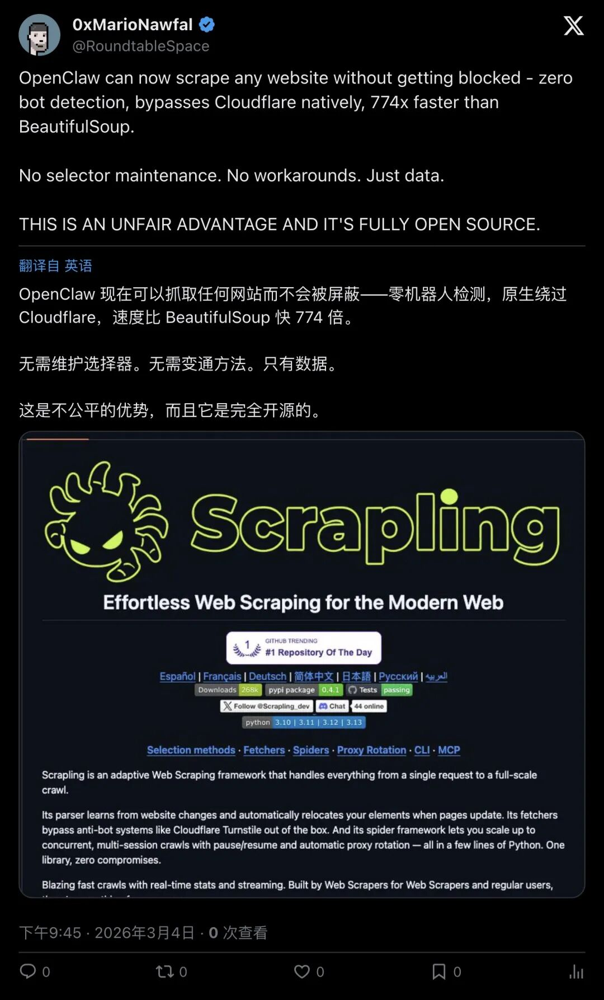
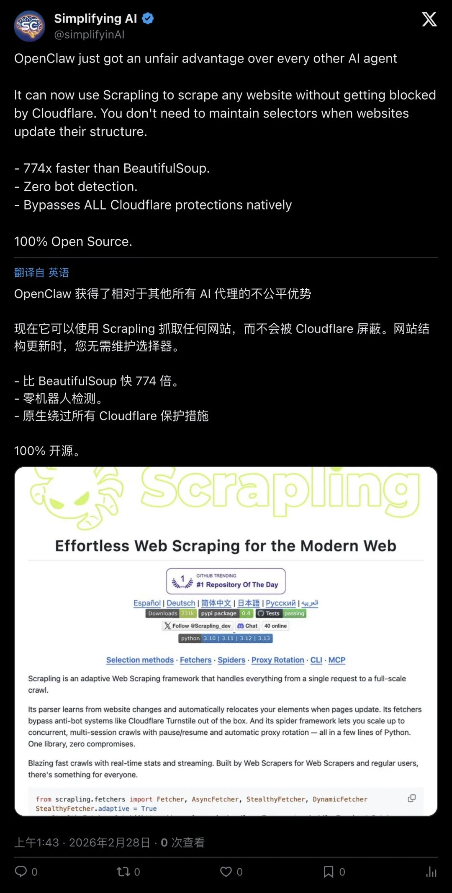
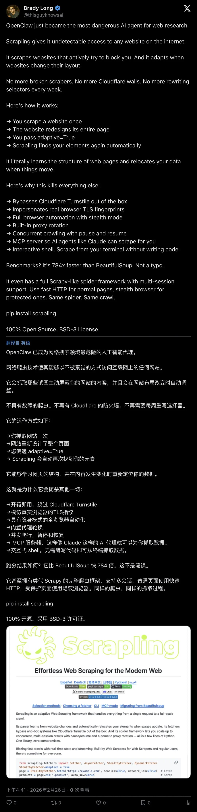
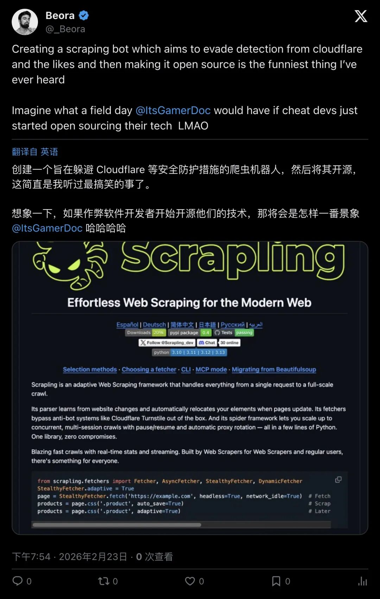

炸裂！OpenClaw「可绕过Cloudflare抓取任何网站」，反爬与AI采集战争全面升级
一个开源工具宣称能"原生绕过Cloudflare、零bot检测、比BeautifulSoup快774倍"，并且"网站改版也无需维护选择器"。推特炸了，SEO从业者怒了：这是在公开教人偷内容。当反爬虫遇上AI采集狂潮，这场战争已经没有退路。
「可以抓取任何网站而不被屏蔽」
2月底，一条推文在开发者圈子里疯传。
RoundtableSpace发推宣布：OpenClaw现在集成了Scrapling框架，可以抓取任何网站而不会被屏蔽。
关键能力包括：
- 原生绕过Cloudflare
（out of the box） - 零bot检测
- 比BeautifulSoup快774倍
- 自动处理动态内容

▲ RoundtableSpace推文：OpenClaw可抓取任何网站不被屏蔽，774倍更快（1.2万浏览）
这不是第一次有人做反爬虫工具。
但这次不一样的是：它是开源的，它集成了AI Agent框架，它声称"out of the box"就能用。
你不需要懂TLS指纹伪装，不需要配置代理池，不需要研究Cloudflare的验证逻辑。
装上就能用。
网站改版？不用管了
更离谱的还在后面。
SimplifyinAI的推文里强调了另一个爆点：你不需要维护选择器（selectors）。
"You don't need to maintain selectors when websites update their structure."
「当网站更新结构时，你不需要维护选择器。」

▲ SimplifyinAI：不需要维护选择器，网站改版也能自适应（9258浏览）
这意味着什么？
传统爬虫最头疼的问题就是：网站一改版，CSS选择器全废，代码得重写。
但如果Scrapling真的做到了"自适应"——那就是把采集成本降到了零。
不需要工程师盯着网站改版。不需要每次都调试XPath。
AI自己看懂页面结构，自己提取数据。
这对内容方来说，简直是噩梦。
「774倍更快」的性能狂飙
性能数据更夸张。
多条推文里反复出现同一个数字：774x faster than BeautifulSoup（有的说784x）。
ThisGuyKnowsAI的推文里列出了完整的技术栈：
TLS指纹伪装 Stealth浏览器 代理轮换 并发爬行 MCP server集成

▲ ThisGuyKnowsAI：完整技术栈，绕过Cloudflare Turnstile（2.7万浏览）
这不是一个简单的Python库。
这是一整套工业级采集基础设施，打包成开源项目，免费给所有人用。
而且它不是孤立的工具——它是OpenClaw这个AI Agent框架的一部分。
这意味着：AI Agent可以直接调用这套能力，自动去网上抓数据、训练自己、完成任务。
反爬虫的门槛，被产品化了。
SEO从业者炸了：「这是在偷我们的生意」
推特上的反弹来得很快。
YoungbloodJoe（一位SEO/营销从业者）直接开骂：
"The reality of the modern web: someone scrapes your content for free, hurts your business, and sells it back to you."
「现代网络的现实：有人免费抓你的内容，伤害你的业务，然后再卖回给你。」
▲ YoungbloodJoe：免费抓内容、伤害业务、再卖回给你（1.1万浏览）
他的愤怒不是没有道理。
对于靠内容变现的网站来说，爬虫意味着：
- 流量被劫持
（用户不来你网站，直接看AI总结） - 广告收入归零
（内容被搬走，广告没人看） - SEO排名下降
（搜索引擎认为你是抄袭方）
而现在，这套"偷内容"的工具，开源了，免费了，还集成了AI。
更讽刺的是：你花钱买Cloudflare防护，结果人家一个开源工具就绕过了。
「做一个躲Cloudflare检测的爬虫还开源」
开发者社区里也有人觉得离谱。
_Beora发推调侃：
"Making a crawler that evades Cloudflare detection and open sourcing it is wild."
「做一个躲Cloudflare检测的爬虫还开源，这也太离谱了。」

▲ _Beora：躲Cloudflare检测还开源，太离谱（截图）
这种调侃背后，是一个更深层的问题：
开源社区的伦理边界在哪里？
你可以开源一个"绕过反爬虫"的工具吗？
你可以开源一个"自动化采集任何网站"的框架吗？
如果可以，那Cloudflare、Akamai这些安全公司的生意还怎么做？
如果不可以，那"技术中立"的原则还成立吗？
这场争论，没有答案。
反爬与采集：一场没有退路的战争
这不是第一次反爬虫和采集工具对抗。
但这次不一样的是：AI把采集需求放大了1000倍。
以前爬虫是少数人的需求：数据分析师、竞品监控、灰产从业者。
现在爬虫是所有AI Agent的刚需：
训练数据从哪来？爬。 实时信息从哪来？爬。 用户任务怎么完成？爬。
AI时代，不会爬虫的Agent，就是瞎子。
而内容方的反应也在升级：
Cloudflare推出更强的bot检测 网站开始用付费墙保护内容 法律诉讼越来越多（纽约时报起诉OpenAI）
这是一场军备竞赛。
一边是"让AI自由获取信息"的理想主义。
一边是"保护内容创作者权益"的现实主义。
没有人会退让。
下一步：更激进的对抗
OpenClaw + Scrapling的出现，只是这场战争的一个节点。
接下来会发生什么？
可能性1：反爬虫技术继续升级
更复杂的验证码（行为分析、生物识别） 更严格的API限流 法律手段（起诉、封禁、罚款）
可能性2：采集工具继续进化
AI自动识别反爬虫策略 分布式采集网络（像BitTorrent一样） 更隐蔽的伪装技术
可能性3：新的平衡点出现
内容方推出"AI友好"的API（付费） 行业协议（类似robots.txt的升级版） 监管介入（欧盟、美国立法）
但无论哪种可能性，有一点是确定的：
这场战争，才刚刚开始。
— END —